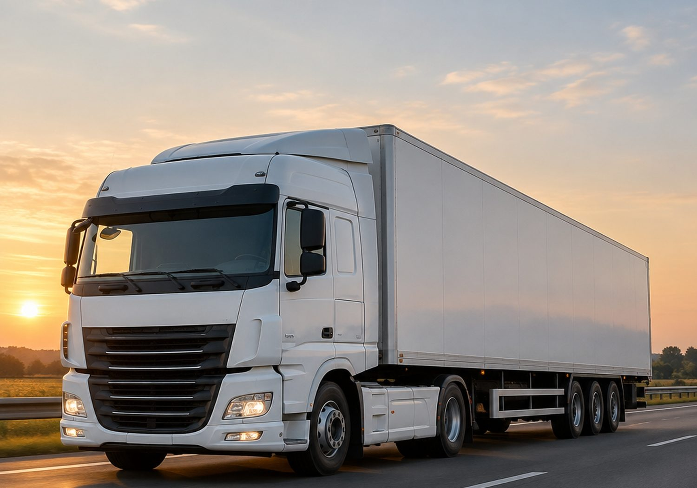
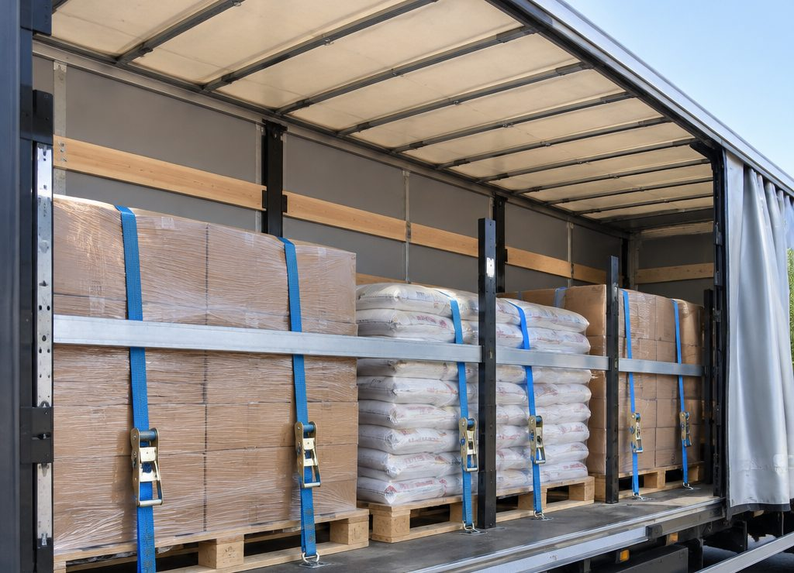
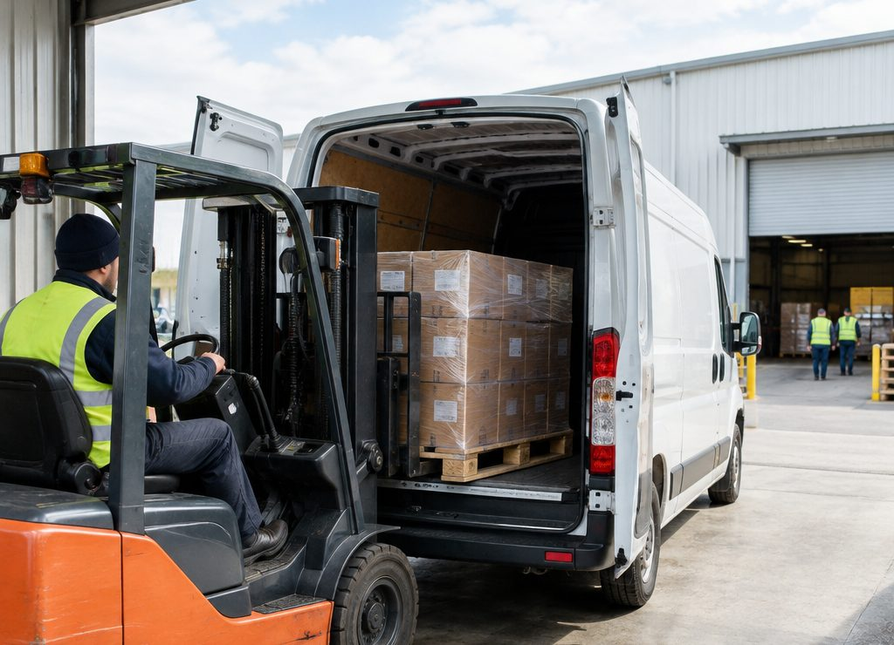
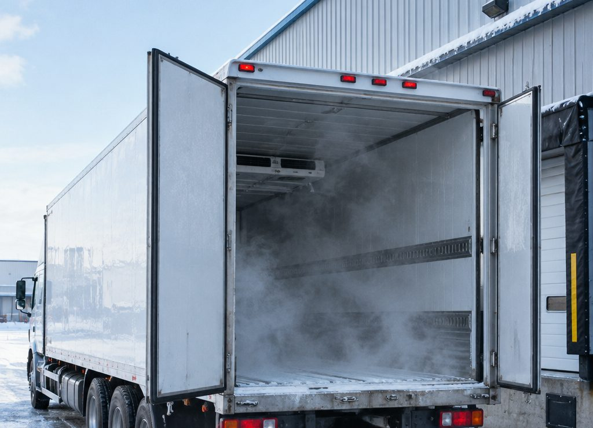
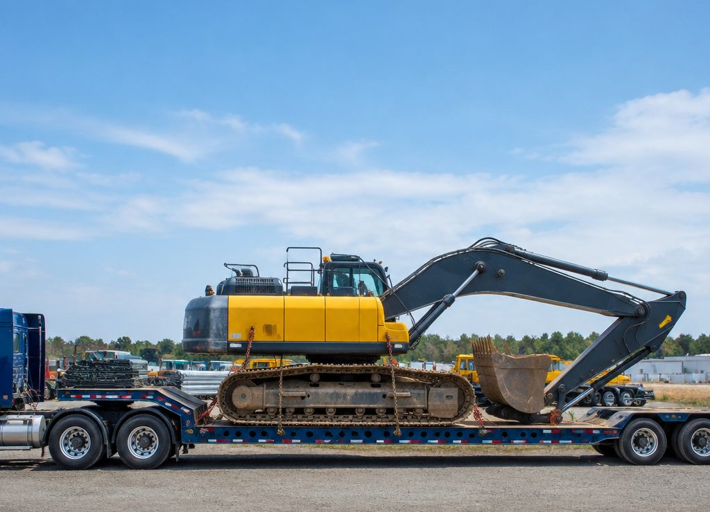

Грузоперевозки
по Беларуси
и за её пределы
Фургоны от 3,5 до 20 тонн, рефрижератор, борт с краном и трал для негабарита. Расчёт до подачи машины, документы и крепление груза.
Услуги
Что перевозим
От одной паллеты по городу до трала с техникой и международного рейса с таможней.
Городские перевозки
Доставка по городу и пригороду: паллеты, мебель, оборудование, стройматериалы. Машина от 3,5 т, работа по часам или за рейс.
Междугородние
Рейсы по Беларуси и в соседние страны: от одной паллеты до полной загрузки. Считаем по километражу и типу кузова.
Международные
Перевозки в Россию, Польшу, Литву, Латвию: документы, таможенное оформление, сопровождение груза.
Сборные грузы
Когда нет полной загрузки: груз едет вместе с другими, вы платите за своё место. Дешевле выделенной машины.
Негабарит и спецтехника
Трал и низкорамная площадка: экскаваторы, погрузчики, оборудование. Согласование маршрута и крепление.
Ответственное хранение
Промежуточный склад, перегрузка, комплектация заказов и отгрузка со склада по графику.
Подбор · интерактив
Машина под груз
Выберите, что везёте: покажем тип кузова, лимиты по весу и объёму и почему подходит именно он.
Рекомендуем
Фургон 5 т · 34 м³
Обычный сухой фургон: груз закрыт от дождя, есть крепёжные ремни. Для 1–8 паллет чаще выгоднее машина 3,5 т.
Уточнить по грузуПроверьте вес и объём: если груз тяжелее или объёмнее — нужен другой класс машины.
Автопарк
Габариты
и лимиты
Клиенту нужны цифры, а не «большая машина». Здесь тоннаж, объём и размеры кузова.
| Машина | Объём | Грузоподъёмность | Кузов, Д × Ш × В | Под что |
|---|---|---|---|---|
| Фургон 3,5 т | 18 м³ | 1 500 кг | 4,2 × 2,0 × 2,2 м | Городская доставка, мелкие партии, переезды |
| Фургон 5 т | 34 м³ | 3 000 кг | 6,2 × 2,3 × 2,4 м | Паллеты, мебель, оборудование по стране |
| Фургон 10 т | 50 м³ | 8 000 кг | 8,0 × 2,4 × 2,6 м | Крупные партии, стройматериалы |
| Тент 20 т | 90 м³ | 20 000 кг | 13,6 × 2,45 × 2,7 м | Междугородние и международные рейсы |
| Рефрижератор 5 т | 30 м³ | 4 000 кг | 6,0 × 2,3 × 2,2 м | Продукты, медикаменты, −18…+4 °C |
| Борт с краном | — | 8 000 кг | 6,5 × 2,5 м | Стройматериалы, блоки, кольца, погрузка краном |
| Трал низкорамный | — | 40 000 кг | 13,6 × 3,0 м | Спецтехника и негабарит |
В шаблоне список машин демонстрационный: замените на свой парк, уточните внутренние размеры и наличие крана.
Расчёт · интерактив
Сколько стоит рейс
Калькулятор считает вилку по километражу и кузову, добавляет погрузку и предупреждает, если вес выше лимита машины.
Ориентировочная стоимость
—
Тарифы в шаблоне демонстрационные: замените ставки в файле assets/js/main.v1.js на свои. Расчёт не учитывает простои, таможню и платные дороги.
Уточнить рейс в WhatsAppПорядок
От заявки
до выгрузки
Пять шагов, которые клиент должен видеть до того, как отдаст груз.
Заявка
Маршрут, груз, вес и объём, дата. Фото груза ускоряют расчёт.
Расчёт
Подбираем машину, считаем километраж и дополнительные работы, называем вилку и срок.
Документы
ТТН и сопроводительные документы, при необходимости — доверенность и пропуска.
Погрузка
Подача машины, крепление груза, фотофиксация состояния до отправки.
Рейс и выгрузка
Связь с водителем по ходу рейса, выгрузка, подтверждающие документы.

Крепление
Груз не должен
ехать по кузову
Ремни, распорные балки, упоры и ложементы. При торможении груз весом в тонну ведёт себя как тонна, а не как коробка: крепление — это не формальность, а часть перевозки.
Отдельная тема — негабарит и техника: там нужны схемы крепления и расчёт нагрузок, поэтому такие рейсы считаем после уточнения габаритов и точек крепления.
Смотреть автопаркРаботы
Как это выглядит



Фотографии в шаблоне демонстрационные. Поставьте свои снимки машин и погрузок — это самый весомый аргумент.
Вопросы
Что спрашивают
Как считается стоимость?
Базовая ставка за километр зависит от типа кузова и тоннажа, плюс погрузка, разгрузка и дополнительные услуги. В шаблоне калькулятор работает на демонстрационных тарифах — их нужно заменить на свои.
Что нужно указать для расчёта?
Маршрут, вес и объём груза, тип груза (нужен ли сухой кузов или рефрижератор), дату и нужны ли грузчики. По этим данным уже можно назвать вилку.
Возите ли одну паллету?
Да, для небольших партий есть машина 3,5 т и вариант сборного груза: вы платите за место, а не за всю машину.
Как оформляются документы?
Товарно-транспортная накладная, при необходимости — доверенность и сопроводительные документы. Для международных рейсов — CMR и таможенное оформление.
Есть ли страхование груза?
В шаблоне этот пункт — заготовка: укажите, страхуете ли вы груз и на какую сумму. Это один из первых вопросов клиента при дорогом грузе.
Что с негабаритом?
Для техники и крупных конструкций используется трал. Нужны габариты, вес и точки крепления; маршрут иногда требует согласования.
Для расчёта достаточно маршрута, веса и объёма. Фото груза помогает точнее подобрать машину.
Заявка
Опишите
перевозку
Маршрут, груз и дата. В шаблоне форма открывает WhatsApp — подставьте свой номер.
Контакты
ГРУЗЛИНИЯ
Грузоперевозки по Беларуси, СНГ и ЕС.
Ваш город, ваш адрес
Это шаблон: телефон, адрес, название и тарифы — заглушки. Замените их на реальные данные перед публикацией.